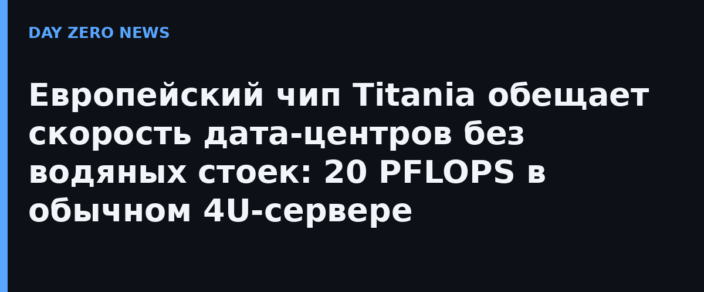

Axelera AI из Эйндховена раскрыла детали Titania — своей третьей кремниевой архитектуры на основе чиплетов. Ключевой тезис компании: современный ИИ-дата-центр скатился в гонку 100-киловаттных стоек с жидкостным охлаждением, которую потянут только гиперскейлеры, а остальным остаются либо слабые серверы, либо миллионные GPU-машины. Titania спроектирована под существующую инфраструктуру: восемь ускорителей в референсном сервере AX8 дают 20 PFLOPS вычислений в формате FP8, 1 ТБ памяти ускорителя и пропускную способность 19,6 ТБ/с — при типичном потреблении всего 5–6 кВт в стандартном 4U-корпусе с воздушным охлаждением. По расчёту Axelera, два таких сервера помещаются в старую стойку на 15 кВт, пять — в 30-киловаттную.
Секрет в архитектуре D-IMC (вычисления прямо в памяти) и отказе от дефицитной HBM-памяти в пользу LPDDR6: каждый корпус получает 128 ГБ ёмкости при меньшем энергопотреблении. Логика простая: современные модели с разреженными смесями экспертов (MoE) велики по общим параметрам, но активная часть мала — важнее объём памяти, чем её пиковая полоса. В пакет также вошли программируемые ядра RISC-V и высокоскоростные межчиплетные связи. Заявленные ориентиры — до 7 раз выше производительность на ватт и до 20 раз лучший TCO против лучших серверов дата-центр-класса. Один сервер Axelera, по словам компании, вмещает модель на 1,6 триллиона параметров в формате FP4 с запасом под KV-кэш. Инструментарий Voyager поддерживает тензорное, экспертное и конвейерное распараллеливание, спекулятивное декодирование и выгрузку KV-кэша «из коробки».
Titania идёт следом за двумя успешно поставляемыми чипами — Metis и Europa — и её разработка идёт при поддержке программы EuroHPC DARE с грантом 61,6 млн евро. Массовое производство — третий квартал 2027 года, портфель подтверждённых обязательств по Titania уже превысил 300 млн долларов, а обязательства по развёртыванию у клиентов расписаны до начала 2028-го. Форм-факторы — обычные PCIe-карты и OCP-совместимые baseboard с восемью OAM-модулями; продавать будут через OEM-партнёров в серверах с воздушным и жидкостным охлаждением. Рынок, который Axelera объявила «недообслуженным», компания оценивает в 110 млрд долларов.
Если обещания хотя бы наполовину сбудутся, это удар по тезису «инференс = только огромные GPU-стойки». Конкурировать с ней пытаются и стартапы с вычислениями в памяти, и крупные производители кремния. Для покупателей смысл один — через полтора года на рынке инференс-железа может появиться реальная альтернатива с ценой входа на порядок ниже. Оговоримся честно: цифры 7x и 20x — обещания производителя, независимых замеров до 2027 года не будет.